| Multiple Regression: Testing and Interpreting Interactions |
| Multiple Regression: Testing and Interpreting Interactions |
効果（effect）：ANOVAと同様、ばらつきを発生させる要因
要素（component）：特定の予測項（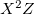など）
 |
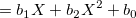 | (4.41) | ||
| 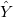 | 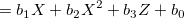 | (4.42) | ||
| 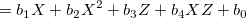 | (4.43) | |||
| 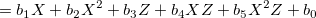 | (4.44) |
それぞれ、 から
から への回帰を
への回帰を で評価することを考えると、
で評価することを考えると、
1つの2次曲線
平行な複数の2次曲線
平行ではないが形状は等しい複数の2次曲線
形状の異なる複数の2次曲線
となる。 また、 の項が入ってくると、から
の項が入ってくると、から への回帰を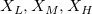で評価すると、これらの回帰直線は同一点で交わらなくなる。
への回帰を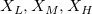で評価すると、これらの回帰直線は同一点で交わらなくなる。
ANOVAでは曲線的な関係性が3水準以上あれば自動で含まれるのに対し、MRではどの項を含めるべきか指定する必要がある。
ANOVAの主効果も、直交多項式によって線形、2次の各自由度1のコンポーネントに分解することができる。
のへの回帰における単純傾斜とは、回帰式のに関する1次の偏微分である。
上記の定義は、1次の項だけ含まれたモデルにも当てはまる。 例えば、式(4.41)は
|
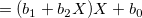 | (4.45) |
と変形できるが、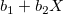は単純傾斜ではない。 この場合は、
| 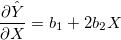 | (4.46) |
が単純傾斜。
このとき は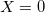のときの単純傾斜であるから、もし
は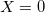のときの単純傾斜であるから、もし なら、回帰曲線はの平均付近で正に傾いている（増加傾向にある）と判断できる。
なら、回帰曲線はの平均付近で正に傾いている（増加傾向にある）と判断できる。
単純傾斜について各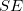を算出し 統計量を計算して検定を行うこともできる。 また、やについて加算変換を施すことで、を単純傾斜として検定することもできる。
統計量を計算して検定を行うこともできる。 また、やについて加算変換を施すことで、を単純傾斜として検定することもできる。
例えば、
|
(4.47) | |||
 |
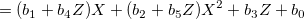 | (4.48) |
と変換でき、のに対する単純傾斜は、
| 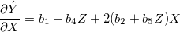 | (4.49) |
となる。 このとき、が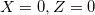の場合の単純傾斜に相当することを考えると、ある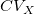および における単純傾斜を知りたければ、
における単純傾斜を知りたければ、
| 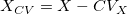 | (4.50) | ||
| 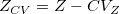 | (4.51) |
と変換した上で
|
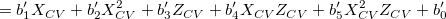 | (4.52) |
を当てはめれば、
| 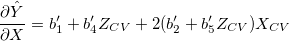 | (4.53) |
における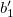は、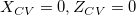つまり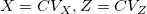における単純傾斜に等しいことになる。
高次の項同士は、センタリングがなされていても強く相関している場合があり、多重共線性を引き起こす可能性がある1。
ここでは独立変数の積や2次項を考えて曲線的な関係性を考えたが、回帰係数自体を
| 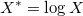 | (4.54) | ||
| 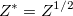 | (4.55) |
などとして1次の項のみ、もしくは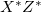を独立変数とした回帰分析を実行することや、
| 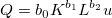 | (4.56) |
を
| 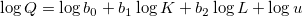 | (4.57) |
などとすることもできる。
Footnotes
| Multiple Regression: Testing and Interpreting Interactions |